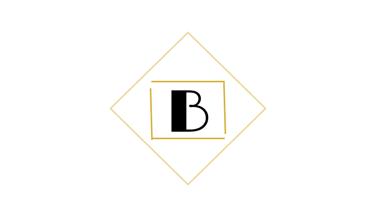

Polished Logo Assignment - Brittany Ochoa
Configuration: High-contrast vector for print and formal documentation.
Configuration: Full-color branding for website headers and digital media.
Configuration: Inverted white logo for dark footers and dark-mode themes.

Configuration: Simplified mark for 32x32 browser tab identification.